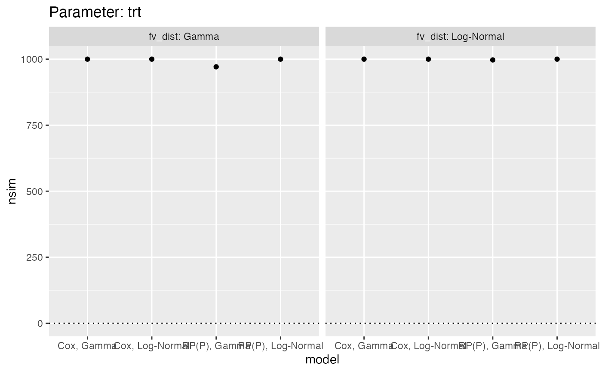
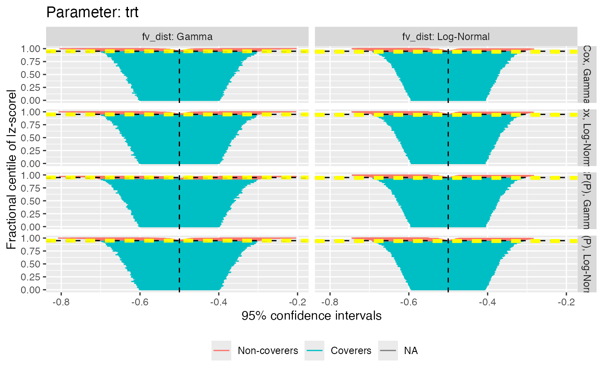

autoplot method for multisimsum objects
autoplot.multisimsum.Rdautoplot can produce a series of plot to summarise results of simulation studies. See vignette("plotting", package = "rsimsum") for further details.
# S3 method for multisimsum autoplot( object, par, type = "forest", stats = "bias", target = NULL, fitted = TRUE, scales = "fixed", top = TRUE, density.legend = TRUE, zoom = 1, ... )
Arguments
| object | An object of class |
|---|---|
| par | The parameter results to plot. |
| type | The type of the plot to be produced. Possible choices are: |
| stats | Summary statistic to plot, defaults to |
| target | Target of summary statistic, e.g. 0 for |
| fitted | Superimpose a fitted regression line, useful when |
| scales | Should scales be fixed ( |
| top | Should the legend for a nested loop plot be on the top side of the plot? Defaults to |
| density.legend | Should the legend for density and hexbin plots be included? Defaults to |
| zoom | A numeric value between 0 and 1 signalling that a zip plot should zoom on the top x% of the plot (to ease interpretation). Defaults to 1, where the whole zip plot is displayed. |
| ... | Not used. |
Value
A ggplot object.
Examples
data("frailty", package = "rsimsum") ms <- multisimsum( data = frailty, par = "par", true = c(trt = -0.50, fv = 0.75), estvarname = "b", se = "se", methodvar = "model", by = "fv_dist", x = TRUE )#>#> Warning: Removed 32 rows containing missing values (geom_segment).#> Warning: Removed 96 rows containing non-finite values (stat_smooth).#> Warning: Removed 96 rows containing missing values (geom_point).#> Warning: Removed 32 rows containing missing values (geom_segment).